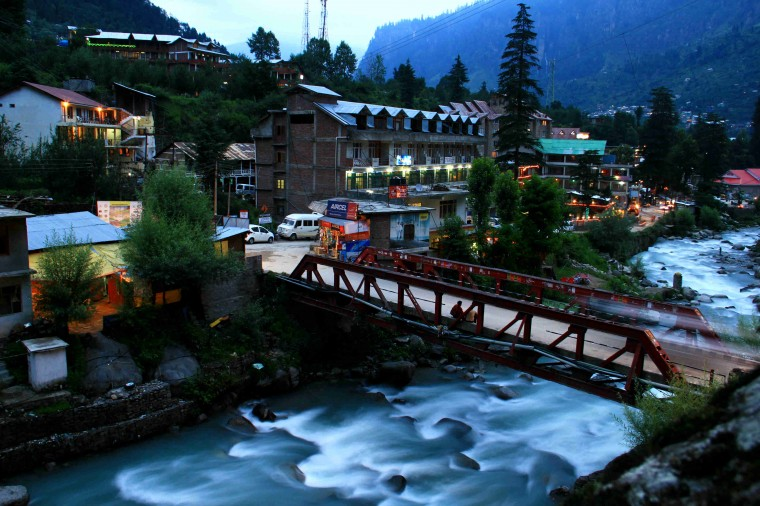
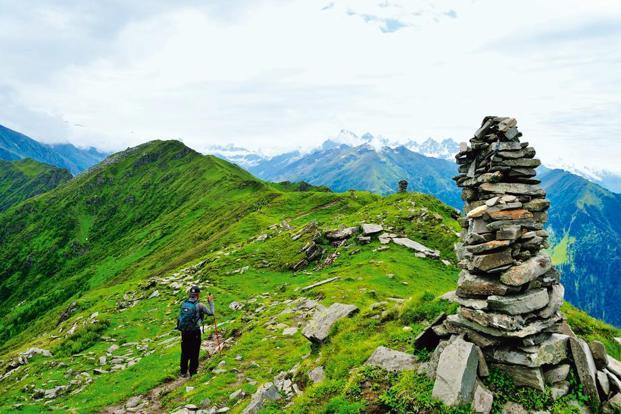
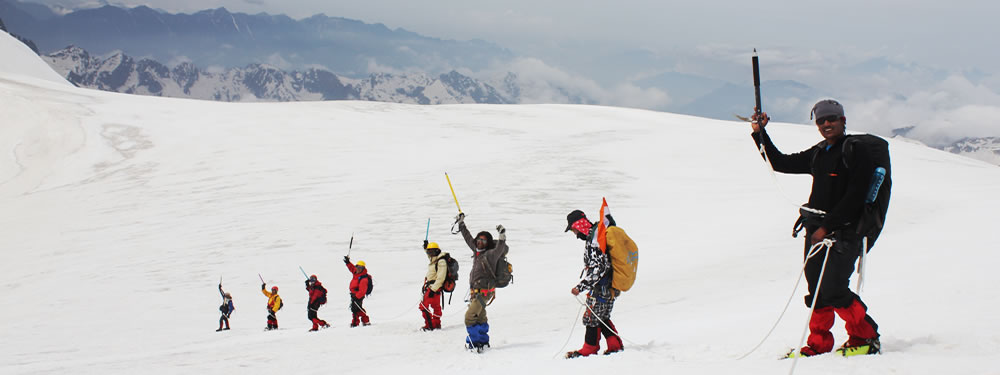
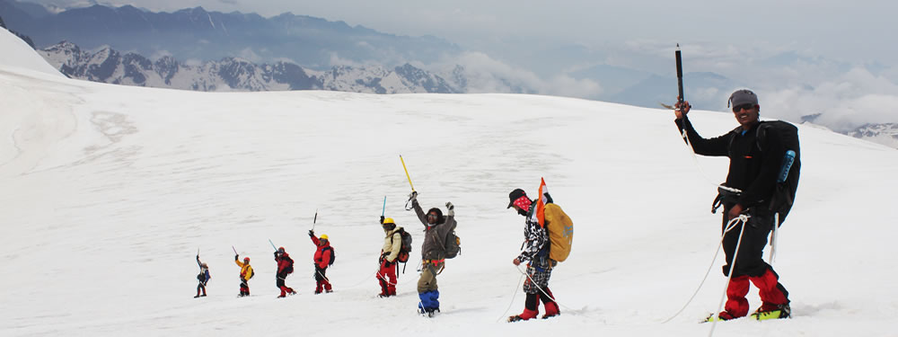

Manali which lies in the lap of the Kullu valley is one of the most visited tourist spot.It is located at an altitude of 2050 meters above sea level and is spread along the banks of the river Beas. Manali derived its name from Manavalaya meaning the abode of Manu or "Home of Manu" and here, the temples are treated as pilgrimages. Its cool atmosphere provides a perfect haven for the ones afflicted by the hot Indian summers. Manali is also famous for adventure sports like skiing, hiking, mountaineering, para gliding, rafting, trekking, kayaking, and mountain biking. Manali is quite famous for its lush green forests of deodar and snow capped mountains.

A stunning hill station surrounded by massive snow clad mountains and thick pinewood forests, Manali has the twisty Beas River as its magnificent centerpiece. Manali in the state of Himachal Pradesh is popular for its breathtaking Himalayan beauty. Lying at an elevation of 6260 feet, Manali is the top spot in the Kullu Manali valley and is blessed with many attractions. To know more about Manali you can go through the Manali Travel Guide. This eye popping resort is sandwiched between the impressive peaks of the Pir Panjal and Dhauladhar ranges. A scared land, which is the abode of various Gods and Goddesses, this striking hill resort has a full calender of numerous colorful events and festivals.
Places to visit and things to do in Manali
Chandrakhani Pass Pandoh Dam in Kullu
 lead
to
lead
to  
